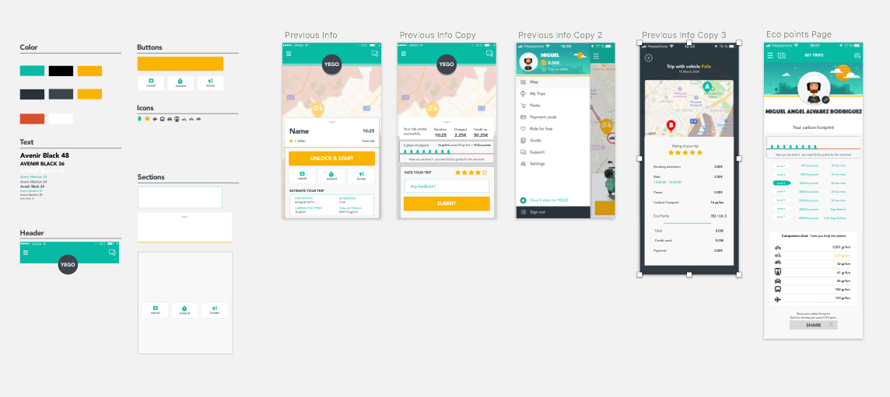
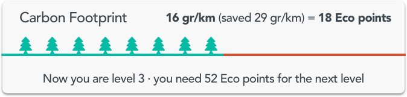
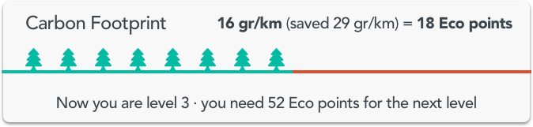
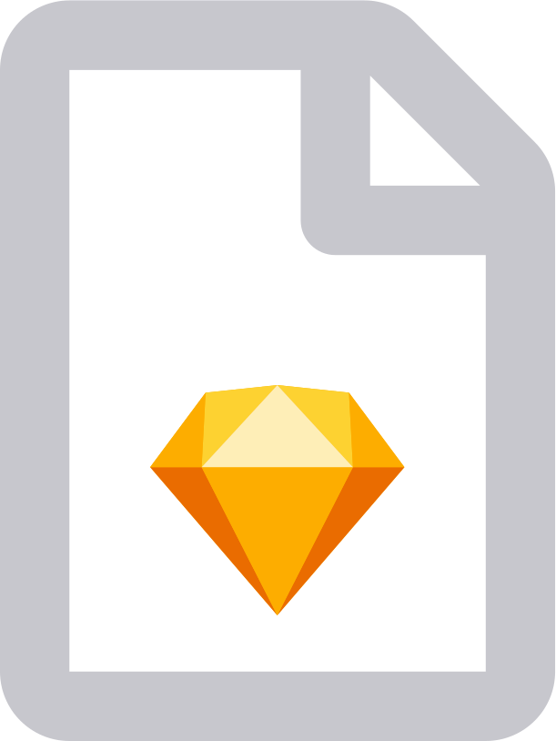
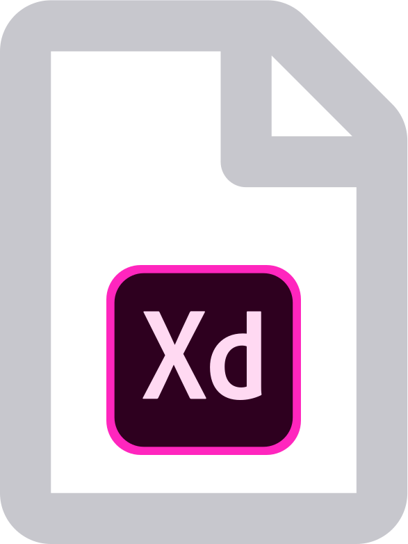

Feature proposal for ecological visibility at the Yego service.
Intro to the problem of the urban air pollution
Air pollution is nowadays a big concern for goverments and society. It also brings big economical uncertainties. Yego users would be concerned about this fact. They are looking for sustainable services and products. With the Yego bikes, pollution can be reduced while enhancing sales. With an iteration over the existing design I would like to help increasing awareness about pollution and also understand how much retention rate can be improved on the Yego’s userbase.
Description of the feature
Frictionless, as an additional service, this feature calculates the carbon footprint generated every Yego ride and displays it to the user. Then it will be compared to the rest of conventional gas transport. Users can learn about how their impact on the environment is but also they can see how riding Yego is a good choice to help reducing emissions.

-
The feature offers:
- Real time air pollution indicator
- Pollution counter per use
- Awareness of the air pollution concern
How this feature can help service conversion
The system would reward those users who are loyal to the service by implementing a small leveling game that rewards free consumables for saved carbon grams (comparing them to other vehicles emissions and using this as currency). These currency points are accumulated and transformed into prizes after the user reached a certain amount of points based on a formula that meets business strategy. The idea behind is to keep the user loyal, by aiming to complete the proposed levels.
How this feature can foster branding
The users can track their metrics. They will associate these learnings to the Yego brand. With this way of teaching users Yego becomes a brand related to sustainability.- Memorable learnings about personalised pollution impact
- By comparison with other services, yego would stand out as a cleaner option
- Organic marketing: sharing information about the saved emissions value
How this feature can leverage city pollution
- Boosting retention on users choosing Yego for their commute
- Raising community awareness
How the benefits of this campaign can be communicated to users
- Show context: Users will know anytime what’s the current air pollution index
- Display metrics of your ride comparsion and learning about how to save emissions
- Link their impact on their context
UI analysis
 

- Destination
- Time estimation
- Carbon footprint impact
- Todays air pollution: information of current pollution status
- Carbon footprint impact
- Saved footprint
- Layout separator is used as an illustration of their leveling bar
- Gained eco points
- Current level indicator
- Remaing points to reach next level and receive a reward
Turning the user service into positive
- Insights page stats display page
- Compare your metric with other kind or transport
- Rewarding the user with saved carbon emisions
- Gamification reasons to complete a new level in order to achieve rewards
- Prompting the user to complete the level, thus engaging them into Yego’s service
- Segmenting the kind of user
- Stats points
Metrics and how to track interaction
- Interaction with awarded points opening related pages
Points system
- Points system might be formulated in order to meet business goals and optimised due to use, test and iteration
Retention Indicators
- Increase of use overtime comparison linked with interaction with related UI elements
Prototype
Downloads
Download the sketch file
Download the Adobe XD with prototype file
I used sketch 43.1 version (free) to set up the mock up and Adobe XD for the protoype